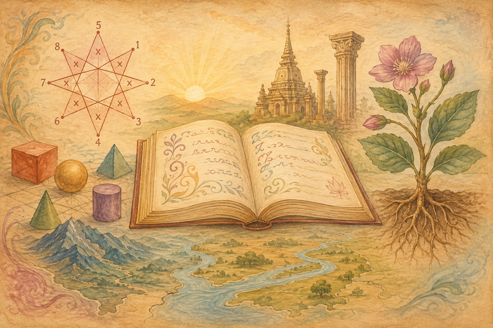

สมุดบทเรียนหลัก · การศึกษาแนววอลดอร์ฟ
ห้าวิชา หนึ่งการเดินทาง — เรียนรู้ด้วยหัว หัวใจ และสองมือ ผ่านลวดลาย เรื่องเล่า และธรรมชาติรอบตัว

ตัวเลขมีจังหวะและลวดลายซ่อนอยู่ — วาดดาวจากสูตรคูณ แบ่งขนมปังเป็นเศษส่วน
ภาษาคือเสียงของหัวใจ — จากชนิดของคำ สู่วรรณคดีสังข์ทอง
วิชาเด่นของ ป.5 แนววอลดอร์ฟ — พืชคือลูกของแสงแดดและผืนดิน
หัวใจของประวัติศาสตร์ ป.5 วอลดอร์ฟ — การเดินทางของมนุษยชาติผ่าน 5 อารยธรรม
จากดอยสูงสู่ทะเลสองฝั่ง — ทำความรู้จักแผ่นดินไทยของเรา
การศึกษาแนววอลดอร์ฟเชื่อว่าเด็กเรียนรู้ด้วย หัว (คิด) หัวใจ (รู้สึก) และ มือ (ลงมือทำ) — บทเรียนหลัก (Main Lesson) จึงเรียนเป็นช่วงยาว 3–4 สัปดาห์ต่อวิชา เพื่อให้เด็กดำดิ่งกับเรื่องเดียวอย่างลึกซึ้ง
เริ่มเช้าด้วยบทกลอน เพลง และการเคลื่อนไหว ปลุกร่างกายและใจให้พร้อมเรียน
ครูเล่าเนื้อหาใหม่เป็นเรื่องราวมีชีวิต เด็กฟังด้วยจินตนาการ ไม่ใช่ท่องจำ
เด็กวาดภาพ เขียน และสร้างสมุดบทเรียนหลักของตัวเอง — สมุดเรียนที่เด็กเป็นผู้แต่งเอง
เนื้อหาในเว็บนี้ผสานหัวข้อเด่นของหลักสูตรวอลดอร์ฟชั้นปีที่ 5 เข้ากับสาระการเรียนรู้ตามหลักสูตรแกนกลางของไทย
| วิชา | หัวข้อเด่นแนววอลดอร์ฟ | เชื่อมโยงหลักสูตรแกนกลาง |
|---|---|---|
| คณิตศาสตร์ | เรขาคณิตมือเปล่า ลวดลายจากตัวเลข เศษส่วนจากของจริง | เศษส่วน ทศนิยม ห.ร.ม./ค.ร.น. พื้นที่และเส้นรอบรูป โจทย์ปัญหา |
| ภาษาไทย | ภาษาผ่านเรื่องเล่าและบทกวี การแต่งเรื่องด้วยจินตนาการ | ชนิดของคำ สำนวนสุภาษิต วรรณคดี (สังข์ทอง) การเขียนเรียงความ |
| พฤกษศาสตร์ | วิชาวิทยาศาสตร์ประจำชั้น ป.5 วอลดอร์ฟ — สังเกตและวาดพืชจริง | โครงสร้างและหน้าที่ของพืช การสังเคราะห์ด้วยแสง การสืบพันธุ์ของพืช |
| ประวัติศาสตร์ | อารยธรรมโบราณ 5 แห่ง เล่าผ่านตำนานและเรื่องราว — เอกลักษณ์ของ ป.5 วอลดอร์ฟ | พัฒนาการของมนุษยชาติ อารยธรรมลุ่มแม่น้ำ มรดกที่ส่งต่อถึงปัจจุบัน |
| ภูมิศาสตร์ | รู้จักแผ่นดินเกิดก่อนออกไปรู้จักโลก | ภูมิภาคทั้ง 6 ของไทย ลักษณะภูมิประเทศ แม่น้ำและทรัพยากรสำคัญ |
แนะนำการใช้: เรียนทีละวิชาเป็นช่วง ๆ ตามแบบ Main Lesson — เริ่มจากอ่านเนื้อหา เล่นกิจกรรม แล้วจบด้วยแบบฝึกหัดและการเขียนบันทึกด้วยตนเอง